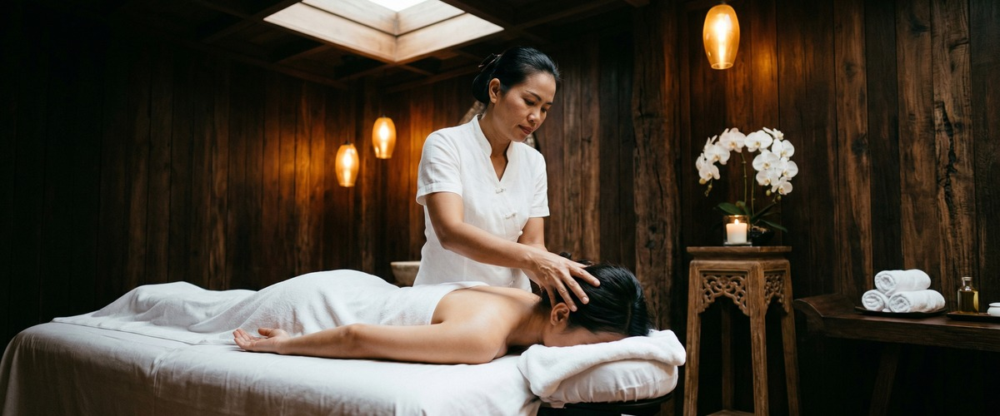
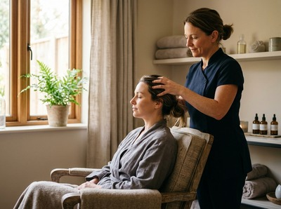
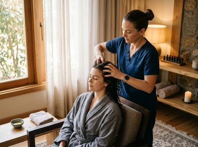

If headaches are a regular part of your week, you already know how much they take from you.

Not just the pain itself, but the hours lost, the concentration gone, the need to retreat from light and sound. For those living with migraines, the impact is even greater. Thai massage therapy offers a clinically supported, drug-free route to reducing how often headaches and migraines occur — and how severe they are. It's something we address directly at Serendipity Massage Therapy & Wellness in Glasgow city centre.
A headache covers several distinct conditions. Tension-type headaches produce a band-like pressure across both sides of the head, while migraines are a separate neurological disorder. Migraines cause moderate-to-severe head pain, usually on one side, and often come with nausea, sensitivity to light and sound, and sometimes visual changes known as aura.


Tension headaches are often driven by tight muscles in the neck, shoulders, and upper back. Desk work and long periods of sitting still are common causes. Migraines involve changes to nerve signals, chemicals, and blood vessels in the brain.
According to the NHS, stress, poor sleep, and hormonal changes are among the most common triggers. Both conditions are more common than many people realise — and both respond well to hands-on treatment.
The link between muscle tension and head pain is well established. Research in the American Journal of Public Health on massage and chronic tension headaches found that targeted massage can reduce how often headaches occur without medication. The reason is straightforward: releasing tight muscles at the base of the skull, in the neck, and across the shoulders reduces the referred pain patterns that drive tension headaches.
For migraine sufferers, the benefits extend to stress and sleep. A randomised trial published via PubMed on massage therapy as a migraine treatment found improvements in both sleep quality and migraine frequency. Thai massage uses acupressure along sen energy lines and assisted stretching to target both muscle tension and the wider stress load that triggers episodes.
Swedish and aromatherapy massage offer further support, working through the nervous system to lower cortisol and ease vascular tension. Both are well suited to clients whose headaches track closely with stress or disrupted sleep.
Hot stone massage is also worth considering for chronic headache sufferers. The warmth from basalt stones helps release tight muscles in the upper back and shoulders — addressing the postural tension that builds through the working week and feeds into recurring headaches. You can book your session online and let us know your specific symptoms in advance.
At Serendipity, on Hope Street in Glasgow's financial district, sessions for headaches and migraines begin with a short consultation. Your therapist will ask about the nature of your headaches, where you feel tension most, and any known triggers. Treatment then focuses on the neck, shoulders, and upper back, with specific attention to the base of the skull — where tension headaches most often begin.
Depending on your symptoms, your therapist may use Thai massage for its stretching and acupressure work, or a Swedish approach for deeper relaxation. Aromatherapy massage with selected essential oils can further support the nervous system and help reduce how often migraines occur.
Book a session at Serendipity and let the consultation guide the approach.
The clients who see the best results tend to share clear patterns. Office workers near Hope Street and Blythswood Square spending long days at screens. People under significant ongoing stress, or with a history of neck and shoulder tension. Those whose migraines track closely with poor sleep or high-pressure periods at work.
New parents and people in physical jobs — where the upper body carries chronic load — also find regular sessions make a real difference. If you've been managing headaches reactively rather than preventing them, getting started with a regular appointment is where that pattern begins to change.
Yes, and there is clinical research to support this. A study in the American Journal of Public Health found that targeted massage reduced how often chronic tension headaches occurred. The key is consistency. Regular sessions address the underlying muscle patterns rather than simply easing pain after each episode.
Most people find that massage during an active migraine is not comfortable. Pressure and stimulation can make sensitivity worse. Massage works best either in the early warning phase, or as a regular preventive treatment between episodes. If you are mid-attack, rest and your usual medication should come first.
Treatments that target the neck, shoulders, and base of the skull work best for tension headaches. Thai massage uses acupressure and assisted stretching to work directly on the muscle groups that refer pain into the head. Swedish massage promotes broader nervous system relaxation, reducing the stress load that feeds tension headache cycles. Your therapist at Serendipity will advise based on your symptoms.
Many clients notice a reduction in headache intensity or frequency after two to four sessions. Research on massage for chronic tension headaches shows measurable changes across a course of treatment, not just a single session. For ongoing migraine management, a regular monthly or fortnightly appointment tends to produce the most lasting results.
Aromatherapy massage combines therapeutic essential oils with a technique that directly supports the parasympathetic nervous system. Oils such as lavender have well-documented calming effects on the stress response, which is a key migraine trigger. For people whose migraines are closely linked to stress or poor sleep, aromatherapy massage is a well-suited option.
Yes. Massage works well alongside conventional medical care. It is not a replacement for diagnosis or prescribed treatment. If you have not yet spoken to a GP about your headaches — especially if they are severe, sudden, or have changed — it is worth doing so. Serendipity's therapists are happy to work alongside whatever your GP recommends.